Pour assurer le fonctionnement efficace d’une usine, il est nécessaire d’organiser et de mettre en place plusieurs activités répondant aux objectifs suivants :
L’adhésion et la participation de tout le personnel de l’usine sont requises pour atteindre ces objectifs. C’est avant tout un travail d’équipe et la collaboration de chacun est essentielle. Chaque salarié constitue l’un des maillons de la chaîne globale de la qualité de nos prestations.
Ce module a pour objectif de vous familiariser avec les différents aspects de l’organisation d’une UIDD, afin que vous puissiez mieux comprendre l’importance de la contribution de chaque poste pour atteindre le niveau d’excellence dans la conduite et la maintenance des installations qui nous sont confiées.
Tout travail d’équipe implique nécessairement de définir assez clairement et précisément le rôle de chaque membre. Dans un premier temps, cette répartition des tâches et des rôles est illustrée par un schéma, appelé organigramme, qui fournit une représentation graphique de l’organisation. Il existe également des fiches de poste pour définir plus précisément la nature des tâches associées à chaque poste.
Il est important que chaque membre de l’équipe connaisse ses fonctions et ses responsabilités au sein de l’usine, et surtout, comment ces dernières s’intègrent dans le fonctionnement global de l’organisation.
L’organigramme est un outil de gestion qui permet à tous de connaître les différentes lignes de communication et d’autorité qui existent entre les services : il lui indique qui contacter pour faire des suggestions, des plaintes, etc., et qui a l’autorité de lui organiser son travail. Chaque usine doit posséder et afficher un organigramme illustrant son mode de fonctionnement.
L’organigramme est évidemment adapté aux contraintes d’exploitation de chaque usine : la taille la complexité de l’usine la nature du contrat. L’exemple présenté ci-après est représentatif d’une usine de capacité classique (50 000 tonnes par an).
Dans un organigramme présentant la structure du personnel d’une usine les lignes verticales servent à illustrer les liens hiérarchiques (d’autorité) entre les différents postes.
Les lignes horizontales servent à illustrer les liens « staff » c’est-à-dire à identifier les postes qui exercent une responsabilité du type « expert » ou « support » mais qui n’exercent pas un rôle d’encadrement d’un groupe d’employés.
Les employés suivants sont généralement inclus :
Fig. 1
Il a un rôle fondamental dans le bon fonctionnement du process et la sécurité sur l’usine. C’est la porte d’entrée de l’usine, et les décisions d’accepter dans telle ou telle filière, ou de refuser une livraison de déchets, sont cruciales.
Ce personnel assure la conduite des équipements et en supervise le bon fonctionnement. Il a pour mission de détecter les dysfonctionnements, de chercher à établir un diagnostic et de communiquer ces informations à la direction et à la maintenance.
Dans certains cas, il assure la maintenance de premier niveau, ainsi que certaines tâches associées au maintien de la sécurité du site et à la réception des déchets à traiter.
Comme l’usine fonctionne 24 heures sur 24, le personnel d’exploitation travaille sur des quarts de huit ou douze heures selon le pays. Suivant les usines, on utilise quatre, cinq ou six équipes reparties en deux ou trois quarts, pour maintenir une présence continue sur le site, ce nombre étant lié à la réglementation en vigueur de chaque pays.
Compte tenu que nos procédés utilisent des fluides sous pression (vapeur jusqu’à 40 bars et plus), il est important que le personnel d’opération ait reçu une formation appropriée pour assurer une bonne conduite des équipements tout en garantissant la sécurité des personnes et des biens. Ce type de formation est obligatoire dans certains pays.
Ce personnel assure l’entretien et la réparation des équipements, avec l’assistance d’entreprises externes pour certains travaux spécialisés. Il assure aussi la gestion des stocks de pièces de remplacement.
Ce personnel intègre des compétences en mécanique, en électricité et en instrumentation. Il travaille généralement le jour. Certaines personnes assurent une astreinte de façon à intervenir en urgence sur appel d’un chef de quart ou d’un membre de l’encadrement.
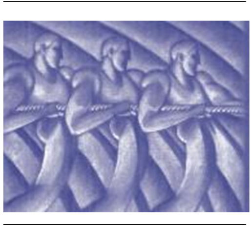
Fig. 2
Dans certaines usines il est prévu un poste d’ingénieur de projet, dont les fonctions consistent à analyser et présenter des solutions à divers problèmes d’opération et maintenance, ainsi qu’à apporter une assistance dans la mise en place de programmes d’assurance qualité.
Ce poste est généralement confié à de jeunes ingénieurs, dans le but de les former, pour qu’ils puissent devenir à terme responsables maintenance/opération ou responsable d’usine.
Le nombre de personnes affectées, varie selon la complexité des tâches administratives et comptables. Ce personnel assure la fonction de secrétariat, parfois celles de la facturation et la comptabilité, et éventuellement celle de la gestion des ressources humaines.
Notre activité étant libre et concurrentielle, il faut aller chercher les producteurs de déchets et les convaincre de faire éliminer leurs déchets dans nos centres. Ce sont les rôle des commerciaux, qui mettent au point des contrats avec les clients grands comptes, démarchent les producteurs de déchets, proposent des services nouveaux…
Le caractère dangereux des produits que nous manipulons implique une excellence dans les procédés, la protection des personnes et de l’environnement. Cette excellence est atteinte grâce à une organisation rigoureuse et transparente (procédures, certifications). C’est le rôle des personnels HQSE, de maintenir et d’améliorer cette organisation afin de garantir ce haut niveau de qualité.
Ce sont essentiellement les principales catégories de personnel que l’on rencontre sur nos sites. Il est important de mettre en place des moyens de communication efficaces et appropriés pour permettre d’obtenir et de maintenir un haut niveau de collaboration entre ces différents niveaux.
Par exemple, l’efficacité du personnel d’entretien sera plus performante si le dysfonctionnement d’un équipement a été consigné par écrit (en ayant au préalable établi un diagnostic précis sur sa cause). Ceci favorisera la mise en place d’une solution plus efficace pour résoudre ou contrôler ce dysfonctionnement.
Faire partie du personnel d’une usine reconnue pour sa qualité d’exploitation est une situation qui procure beaucoup de satisfaction et qui stimule l’intérêt de tous à se dépasser pour innover et améliorer la performance de l’ensemble de l’UIDD.
Certains moyens et certaines activités sont à mettre en œuvre pour permettre cette démarche vers l’excellence, et celle-ci sera plus fructueuse si l’ensemble du personnel adhère à cet objectif. La collaboration de chaque salarié est déterminante pour le succès global de l’entreprise. La démarche vers l’excellence doit être adaptée au contexte spécifique de chaque usine et aux moyens disponibles.
Pour certaines usines plus anciennes, de faible capacité, il importera de savoir fixer des objectifs raisonnables et de maintenir un rythme de progression continu vers l’atteinte de meilleurs niveaux de qualité d’exploitation.
La dimension, somme toute réduite, de nos usines facilite la communication et permet l’interaction du personnel à tous les niveaux. Il faut tenir compte de cet avantage pour accroître l’efficacité du travail d’équipe. L’efficacité du mode de gestion se traduit par une organisation détaillée du travail et par l’usage de directives et de procédures faciles à comprendre et à appliquer, par tous.
L’absence de procédures ou d’indications ne doit pas être une excuse pour justifier l’apparition d’un problème en cas d’imprécision ou, parfois, d’incohérence apparente. Il appartient à chacun de demander les explications nécessaires en vue de comprendre et d’exécuter les tâches.
L’aspect participatif d’un mode de gestion implique la mise en place d’un mode de communication efficace. En effet, qui n’a pas entendu un jour « Comment aurais-je pu savoir qu’il fallait… ? » ou bien « On ne me l’a jamais dit ! ». Très souvent, ces réflexions sont justifiées, car pour diverses raisons, le message n’a jamais atteint son(ses) destinataire(s).
Il est donc important que chaque membre de l’équipe contribue, selon ses responsabilités, à la transmission des informations.
CommunicationLa communication est l’un des aspects les plus importants de la gestion d’une UIDD. Elle doit servir à :
Plusieurs difficultés peuvent apparaître en l’absence de communication. L’efficacité d’une organisation repose sur l’efficacité de chaque personne à bien communiquer. Chacun doit connaître sa propre fonction et doit réaliser qu’il est une source d’information, utile pour les autres.
Les principaux modes de communication sont les suivants :
Dans notre activité, très réglementée, la communication écrite est indispensable. Beaucoup de personnel de conduite ou de maintenance ont de la difficulté à préparer par écrit des instructions ou des procédures. Il en résulte parfois des interprétations erronées qui engendrent un impact négatif sur la qualité d’exploitation. Il est donc important qu’à partir du niveau de chef de quart ou contremaître un effort soit entrepris pour faciliter, établir et diffuser une information facile à comprendre et à utiliser.
Principes de base de la communication1. Le personnel doit avoir le désir de communiquer.
La rétention d’information ne bénéficie à personne : meilleure est la qualité ou la transparence d’information, meilleure sera la motivation et la participation des personnes avec lesquelles vous avez à collaborer.
2. Le communicateur doit avoir une pensée claire et structurée
À ce titre, il doit préparer le message « à faire passer » et l’exprimer de façon claire et précise, pour éviter que l’information soit déformée ou mal interprétée.
3. Le communicateur doit s’adapter à son interlocuteur
Chaque personne est différente et il faut établir un niveau de communication approprié et se mettre au niveau des personnes concernées.
4. Le communicateur doit s’exprimer de façon simple, avec le minimum de mots :
Il faut éviter le jargon technique inutile et essayer de vulgariser les concepts, utiliser des phrases courtes et structurer la communication pour créer un enchaînement simple d’idées et de concepts.
5. Le communicateur doit vérifier que son message a bien été compris et enregistré. Souvent, pour diverses raisons, le message n’atteint pas la cible :
Si ces recommandations ne sont pas appliquées, on comprend pourquoi certain communicateur peuvent être mal compris.
Retenons la phrase : « Il faut répéter les messages plusieurs fois et vérifier qu’ils ont été bien compris. »
Les UIDD sont soumises à une réglementation importante touchant plusieurs domaines : installations classées, environnement, appareils sous pression, sécurité, formation/habilitation, etc.
Atteindre l’excellence au niveau de la qualité d’exploitation signifie nécessairement que l’on connaît et respecte la réglementation applicable à une usine. CGEA Onyx a préparé un Manuel de Prévention Sécurité UTOM, disponible sur votre site et présentant une description détaillée des règlements applicables en matière de prévention et de sécurité. Ces règlements sont nombreux et complexes et il convient de les consulter pour clarifier et comprendre certains points. C’est pourquoi, il est important que chaque usine puisse avoir accès rapidement aux principaux textes de la réglementation en vigueur.
Conduite et maintenance des exploitationsLa responsabilité première de l’exploitant est de garantir la sécurité du fonctionnement de l’installation, en accord avec la réglementation. Le tableau ci-dessous donne un aperçu de la réglementation applicable.
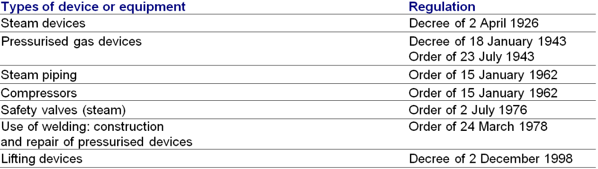
Fig. 3
Gestion des impacts environnementauxNotre groupe assure une délégation de services publics pour le compte des collectivités locales. Compte tenu de la nature de nos activités, il est de notre responsabilité de garantir un traitement optimum des ordures ménagères qui nous sont confiées, afin de préserver la qualité de notre environnement actuel et futur.
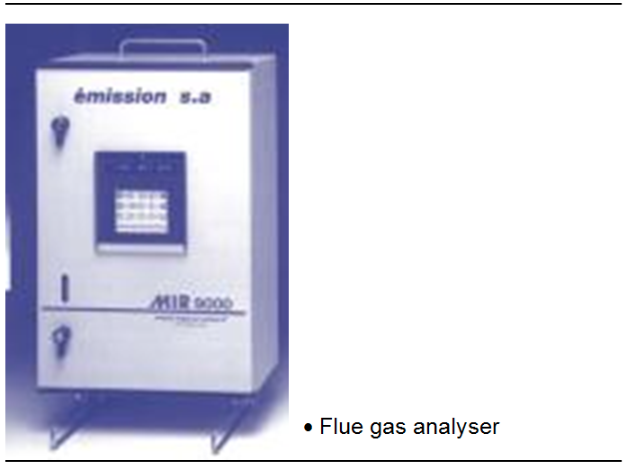
Fig. 4
À ce titre le tableau ci-dessous donne un aperçu de la réglementation applicable, concernant nos activités de traitement.
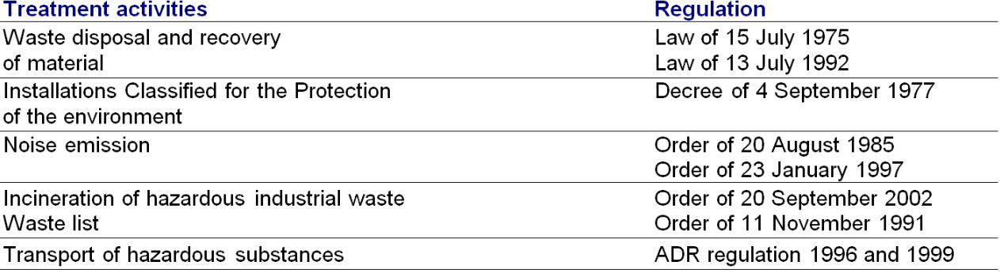
Fig. 5
D’autre part, le Manuel de Prévention Sécurité UTOM disponible sur votre site vous présentera une liste exhaustive des différents autres textes réglementaires applicables :
L’organisation de la sécurité sur le site est une responsabilité première de l’employeur. La sécurité concerne l’ensemble du personnel et des visiteurs. Ceci demande la mise en place de plusieurs actions nécessitant la collaboration soutenue de tout le personnel.
Formation d’accueilTout nouvel employé, permanent ou intérimaire, ainsi que toute entreprise extérieure doivent recevoir cette formation à la sécurité et doivent respecter et appliquer les consignes établies pour assurer la sécurité du travail sur le site.
Plan de préventionLe plan de prévention s’applique dans le cadre de la réglementation relative à l’hygiène et à la sécurité des travaux effectués dans un établissement par une entreprise extérieure (décret du 20 février 1992).
Ce décret prévoit notamment, en cas de présence de plusieurs entreprises sur un même lieu de travail, une obligation de coopération à la mise en œuvre commune de dispositions relatives à la sécurité, à l’hygiène et à la santé, ainsi qu’une coordination de leurs activités en vue de la protection et de la prévention des risques professionnels liés à l’interférence des activités, installations et matériels. C’est l’objet du plan de prévention.
Ce plan ne concerne que les risques réciproques induits par l’interférence des activités, des installations et des matériels des entreprises extérieures avec l’entreprise utilisatrice, ainsi de même qu’entre elles, et les mesures de prévention correspondantes.
L’entreprise extérieure est tenue de se conformer aux règles de sécurité définies lors de l’établissement du plan de prévention.
Protocole de sécuritéLors de toute opération de chargement ou de déchargement effectuée par une entreprise extérieure, un protocole de sécurité, sous forme de document écrit, devra être mis en œuvre (arrêté du 26 avril 1994).
« Il faut entendre par opération de chargement et de déchargement toute activité concourant à la mise en place sur ou dans un engin de transport routier, ou à l’enlèvement de celui-ci, de produits, fonds et valeurs, matériels ou engins, déchets, objets et matériaux de quelque nature que ce soit. »
Un protocole de sécurité peut être signé et annexé au contrat annuel si l’entreprise intervient continuellement dans nos locaux. Le responsable de l’entreprise intervenante se charge d’informer son personnel concernant le respect des règles de sécurité à tenir.
Manuel de prévention/sécurité CGEA ONYXLe manuel de sécurité doit être disponible sur le site et expliquer les principaux dangers auxquels les employés sont exposés ainsi que les préconisations et les méthodes de travail exigées pour éliminer les risques d’accidents.
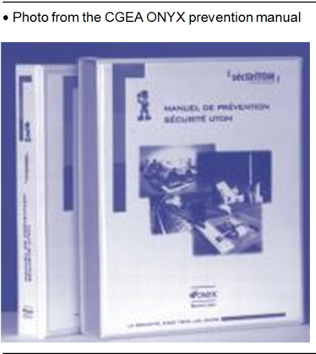
Fig. 6
Comité de sécuritéUn programme continu d’amélioration de la sécurité doit être élaboré et suivi sur chaque site pour permettre au personnel de participer à l’identification des dangers potentiels et des mesures correctives à apporter. Le personnel doit contribuer à la mise à jour du manuel et des procédures de sécurité spécifiques au site en fonction de son évolution.
Formation sécuritéDes formations sécurité, notamment en protection incendie (exercices préventifs), doivent être réalisées de façon périodique. Le type et la fréquence des formations doivent être détaillés dans le manuel de sécurité.
Respect des consignesCertaines règles ou procédures de sécurité peuvent inclure des exigences qui, à première vue, apparaissent souhaitables dans certains cas, sans pourtant être nécessairement obligatoires.
Les règles ou procédures de sécurité ne doivent pas être sujettes à interprétation, elles doivent être obligatoirement appliquées pour tous et à tout moment : c’est une des bases fondamentales de tout programme de sécurité.
Le port des équipements de protection individuels (EPI) en est un bon exemple. La collaboration de tout le personnel est indispensable pour un respect sans faille des procédures retenues pour le site.
Procédures de sécurité spécifiques au siteChaque site dispose de certaines procédures qui lui sont propres et qui permettent une réaction rapide et organisée en cas d’incidents majeurs. Ces procédures concernent les besoins suivants :
Ces procédures sont à inclure dans le Manuel de Prévention Sécurité dans la partie du manuel réservée aux procédures spécifiques au site.
Les usines modernes d’incinération de déchets dangereux sont des équipements industriels complexes. La conduite professionnelle de ces équipements nécessite l’établissement et l’usage de procédures détaillées, lesquelles seront à même de garantir la qualité et l’uniformité des modes opératoires entre les différentes équipes.
Le personnel doit contribuer à la mise au point et au développement de ces procédures pour s’assurer qu’elles sont bien adaptées aux pratiques et au langage courant de l’usine : précision, simplicité et brièveté seront les caractéristiques recherchées dans l’élaboration de documents d’exploitation.
Lors de la construction d’une usine, des lots séparés sont confiés à différents entrepreneurs, chacun établissant une première version des documents d’exploitation (procédures) nécessaires pour les équipements sous leur responsabilité. L’établissement de procédures complètes pour le démarrage et l’arrêt nécessite souvent de faire une intégration et une synthèse des procédures constructeurs développées pour des lots différents. De plus, ces procédures doivent constamment être mises à jour pour refléter les changements apportés au procédé lui-même ou au mode opératoire (ou lors de modifications importantes). Seule une mise à jour précise des procédures pourra garantir en tout temps une réaction rapide et organisée en cas d’incidents imprévus.
Principales procédures à développer et à utiliser :L’exploitation d’une UIDD implique nécessairement que l’on mette en place les procédures et les systèmes qui assureront une complète traçabilité des opérations et des événements.
Il est donc important d’enregistrer pour chaque quart, aux dates et heures de fonctionnement, les différentes données caractérisant les modes opératoires, ainsi que les travaux d’entretien ou de modifications réalisés sur l’installation.
Ces informations permettent un meilleur suivi de la performance et du rendement et fournissent les données nécessaires à la production de rapports destinés à des intervenants externes (client, organismes publics de réglementation, assureurs, associations professionnelles…) ou à des intervenants internes au groupe (usine, agence, région, siège…). Le prochain module traitera cette question de façon détaillée.
Dans toute activité industrielle, la maintenance est primordiale. Elle conditionne production, productivité, qualité, délais, coûts, rentabilité, sécurité…
La maintenance doit être considérée comme une fonction productive, comme une source de profit pour l’entreprise. La qualité du service maintenance, ses performances se mesurent en termes de fiabilité, de maintenabilité, de disponibilité, de sécurité, tout cela se résumant par ce que l’on appelle la sûreté de fonctionnement.
La c’est avant tout la capacité qu’a un système de remplir correctement ses fonctions et aussi à les maintenir dans le temps. Elle est constituée de quatre composantes :
Ces quatre composantes sont étroitement liées : une bonne maintenabilité engendre une maintenance correcte, conférant à son tour une bonne fiabilité aux machines, celle-ci offrant alors une bonne sécurité, avec une disponibilité opérationnelle optimale.
Les divers types de maintenanceD’après l’Afnor (Association française de normalisation), la maintenance est « l’ensemble des actions permettant de maintenir ou de rétablir un bien dans un état spécifié, ou en mesure d’assurer un service déterminé ».
Il existe plusieurs types de maintenance, correspondant chacune à un événement différent. Ils se répartissent en maintenance préventive et en maintenance corrective.
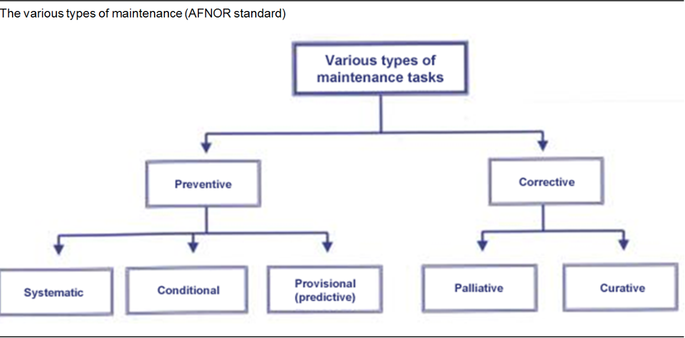
Fig. 7
Définitions
La maintenance préventive a pour objet de réduire la probabilité de défaillance ou de dégradation d’un équipement. Elle est déclenchée par un échéancier établi à partir d’un nombre prédéterminé d’unité d’usage et/ou des critères prédéterminés significatifs de l’état de dégradation du bien. On distingue :
La maintenance corrective correspond à l’ensemble des activités réalisées après la défaillance d’un bien ou la dégradation de sa fonction pour lui permettre d’accomplir une fonction requise, au moins provisoirement.
Elle concerne en particulier :
Elle comprend :
Le résultat des activités doit présenter un caractère permanent. Ces activités peuvent être des réparations, des modifications ou des améliorations destinées à éliminer la ou les pannes.
Les usines d’incinération comprennent un nombre important d’équipements mécaniques, électriques et électroniques. La conduite et l’entretien de ces équipements nécessitent de faire appel à de nombreuses informations techniques. Ces informations apparaissent sur divers documents :
Dès la mise en service de l’usine des changements sont apportés pour régler divers problèmes de mise au point. Par la suite, il y aura aussi inévitablement des modifications réalisées pour améliorer le mode d’exploitation.
Il est très important de vérifier que les principaux plans et manuels sont disponibles en bon état et mis à jour pour refléter ces changements et qu’ils offrent une représentation précise de l’installation. Par exemple, si les schémas de câblage des armoires électriques sont imprécis, non seulement les travaux de maintenance seront plus difficiles à réaliser, mais il y aura augmentation des risques pour le personnel.
Dans une usine des incidents imprévus peuvent survenir à tout moment. Pour réagir rapidement, en toute sécurité, à ce genre d’incidents il faut disposer de l’information la plus récente, et de qualité. Durant la vie d’une usine, le personnel d’exploitation et de maintenance est appelé à jouer un rôle important pour vérifier et assurer le maintien de l’intégrité de cette information, et la mettre à jour continuellement.
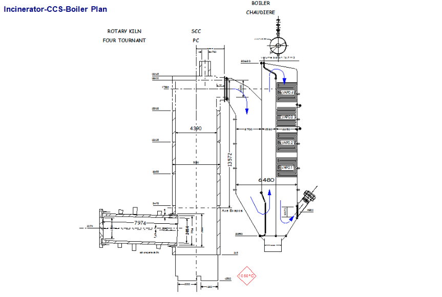
Fig. 8
[width=0.8] {Images/M29/M29_9.png}
Une attention particulière sera apportée aux schémas de câblage, au diagramme d’instrumentation et contrôles, et aux diagrammes des réseaux de tuyauterie avec leurs accessoires. Le repérage physique (mode d’identification) des équipements doit permettre un lien facile avec la documentation technique de l’usine.
Enfin, pour faciliter les nombreuses discussions et explications de problèmes de fonctionnement, chaque site trouvera utile d’installer sur un mur de la salle de contrôle ou salle de conférence les plans suivants :
Pour atteindre et conserver le niveau d’excellence dans la qualité d’exploitation, le personnel doit être capable de bien maîtriser les différents aspects techniques reliés à leur fonction et de garantir la sécurité des opérations pour les personnes et les biens de l’usine. La nécessité de recourir à un programme de formation est justifiée par les besoins suivants :
Bien que l’équipe d’encadrement soit responsable de la mise en œuvre des programmes de formation adaptés aux besoins du personnel, il appartient au personnel en formation de poser toutes les questions nécessaires à la bonne compréhension des cours et d’assurer un retour d’information permettant de valider le degré d’acquisition de connaissances.
Une formation inadéquate ou une connaissance insuffisante de votre fonction ne doivent pas être une excuse pour justifier l’apparition d’un problème ! Ne restez pas dans le doute.
Le programme de formation, mis en place dans chaque UIDD, doit indiquer les formations recommandées ou nécessaires pour chaque poste et la périodicité de reprise lorsque nécessaire.
Formation à la tâcheUne partie importante de la formation s’effectue bien souvent en usine, à proximité des équipements, par enseignements individuels à un nouvel employé ou à un employé formé pour un nouveau poste. Parfois une formation n’aboutit pas au résultat escompté ; les raisons peuvent être :
Sans entrer dans un exposé théorique sur l’art de former et d’enseigner, nous résumons ci-dessous les principes de base suivants :
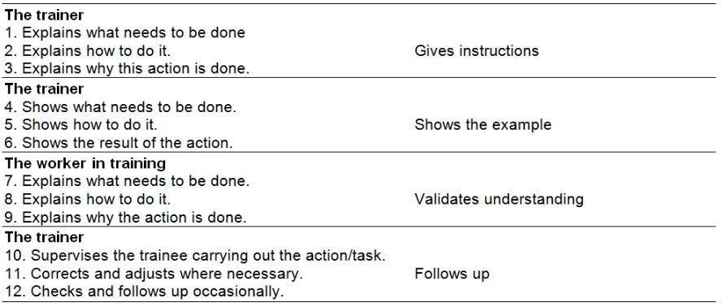
Fig. 9
{figure} Matériel de formationChaque usine trouvera utile de maintenir certains ouvrages de référence sur les techniques de notre métier, en plus de suivis de support à la formation, ces documents (livres, rapports, revues techniques, vidéos) peuvent aussi aider à mieux comprendre et résoudre certains problèmes.
Les organisations désireuses de suivre et mesurer la performance et la qualité de leurs opérations établissent des procédures permettant de documenter les principales étapes des travaux réalisés pour vérifier que les indicateurs garantissant la qualité du travail soient rencontrés ou dépassés.
Cette démarche porte le nom de programme d’assurance qualité. Ces programmes aident à témoigner de la compétence d’une société à bien faire évoluer et corriger les déficiences de ses produits et de ses activités.
Ces programmes sont souvent exigés par les clients car ils permettent et favorisent une meilleure qualité de prestation. Comme cette pratique est très répandue, des standards ont été développés pour spécifier les différentes exigences de satisfaction par un programme d’assurance qualité.
figure[H]
Fig. 10
Le standard très utilisé est la norme ISO, développé par l’Organisation internationale de normalisation. Les entreprises désireuses de voir leur programme d’assurance qualité être certifié ISO doivent satisfaire à des exigences précises, lesquelles font l’objet d’une vérification indépendante par un organisme accrédité.
Qu'est-ce qu'une norme ? {0,3 cm}Les normes sont des accords documentés contenant des spécifications techniques ou autres critères précis destinés à être utilisés systématiquement en tant que règles, lignes directrices ou définitions de caractéristiques pour assurer que des matériaux, produits, processus et services sont aptes à leur emploi.
Par exemple, le format des cartes de crédit, des cartes à prépaiement téléphonique et des cartes dites « intelligentes » que l’on retrouve partout est dérivé d’une norme internationale ISO. Le fait d’adhérer à la norme qui définit des caractéristiques telles que l’épaisseur optimale (0,76 mm) signifie que les cartes pourront être utilisées dans le monde entier.
Les normes internationales contribuent ainsi à simplifier la vie et à accroître la fiabilité et l’efficacité des biens et services que nous utilisons.
Qu'est-ce que l'ISO ?L’Organisation internationale de normalisation (ISO) est une fédération mondiale d’organismes nationaux de normalisation qui regroupe quelque 130 pays, à raison d’un organisme par pays.
L’ISO est une organisation non gouvernementale, créée en 1947. Elle a pour mission de favoriser le développement de la normalisation et des activités connexes dans le monde, en vue de faciliter entre les nations les échanges de biens et de services et de développer la coopération dans les domaines intellectuel, scientifique, technique et économique.
Les travaux de l’ISO aboutissent à des accords internationaux qui sont publiés sous la forme de normes internationales.
Pour notre activité de services, d’exploitation d’incinérateur d’ordures ménagères, deux principaux standards ISO peuvent faire l’objet d’une démarche : le standard ISO 9001 et le standard ISO 14001.
Standard ISO 9001 : qualitéPour obtenir une accréditation ISO 9001, une société devra réaliser une description systématique de toutes ses activités et indiquer pour chacune de ces activités, quels sont les éléments de qualité à suivre, comment les mesurer et quelle est la procédure utilisée pour garantir que tous les éléments de qualité soient conformes aux objectifs.
L’entreprise devra démontrer à l’organisme de vérification que toutes ces procédures sont connues, maîtrisées et utilisées par son personnel. L’adhésion et la collaboration de tout le personnel seront nécessaires à la réussite de la démarche.
La certification ISO 9001 est accordée pour une période d’une année, période après laquelle l’entreprise doit encore faire l’objet d’une vérification. L’obtention d’une certification ISO représente toujours un accomplissement dont le personnel d’usine tire beaucoup de satisfaction.
La réalisation d’un processus de certification ISO 9001 force à revoir et réorganiser les méthodes de travail et à uniformiser la façon d’évaluer et de contrôler les résultats. Il en résulte une meilleure productivité et une meilleure qualité d’exploitation.
Standard ISO 14001 : management environnementalPour obtenir une certification ISO 14001, une société doit réaliser une évaluation de l’impact environnemental de ses activités et mettre en place un ensemble de procédures permettant de garantir le respect de la réglementation applicable, le suivi de toute déviation et la recherche de correctifs appropriés. De plus, l’entreprise doit s’engager dans un processus d’amélioration continu de sa performance environnementale.
Ces procédures font généralement l’objet d’une vérification par un organisme indépendant pour que la certification soit assurée. Comme pour le certificat ISO 9001, le certificat est valable pour une année.
Étant donné que nos activités sont très orientées sur la protection de la qualité de l’environnement, le standard ISO 14001 est très approprié pour nos opérations et il est de plus en plus exigé par nos clients.
OHSAS : management de la sécuritéLe Groupe ONYX est un leader international dans le domaine du traitement de nombreux déchets. Ce résultat est le fruit d’un travail efficace réalisé pendant plusieurs années afin de démontrer à nos clients que nous sommes parmi les meilleurs pour obtenir la délégation des services publics dont ils ont la charge. Ces services sont d’une importance capitale pour préserver notre environnement, et nous nous devons de soutenir nos efforts pour maintenir le niveau de notre image au plus haut.
À travers notre performance, l’image de la collectivité délégataire est également impliquée, comme celle de notre industrie. La recherche de l’excellence est une condition essentielle au maintien de notre image commerciale et à notre développement futur.
Les actions nécessaires :Le personnel de chaque usine se doit d’offrir une contribution importante au développement de l’expertise et du savoir-faire du groupe. Chaque usine accumule une quantité d’expérience relative à la résolution de différents problèmes techniques et pour lesquels il est nécessaire de rendre cette information disponible au reste du groupe.
Cet effort nécessite dès le départ des méthodes de travail rigoureuses pour documenter les problèmes et les travaux réalisés, pour ensuite effectuer une synthèse qui sera rendue disponible.
Cette tâche peut sembler s’ajouter à une charge déjà importante de travail, mais il est essentiel que chacun y contribue car c’est ainsi que le groupe peut bénéficier de sa dimension afin de devenir encore plus concurrentiel.
Enfin, ce processus d’échange technique permet de mieux connaître le personnel des différentes usines ; il rend possible l’identification de ressources spécialisées dans certains domaines et qui peuvent devenir disponibles au niveau du groupe.
Le fonctionnement d’une usine d’incinération nécessite une organisation et la mise en place de procédures assez similaires à celles que nous rencontrons dans d’autres types d’industrie : pâtes à papier, pétrochimie, production de sucre…
Pour développer une expertise de haut niveau et maintenir cet avantage concurrentiel, il faut savoir identifier et intégrer les nouveaux outils, les nouvelles méthodes de travail qui se développent périodiquement dans le monde industriel.
L’intégration de ces nouvelles approches requiert généralement des changements dans les habitudes de travail des différentes catégories de personnel de l’usine. Ce désir de demeurer à la fine pointe de la technologie et la capacité de s’ajuster aux changements nécessaires sont les facteurs déterminants qui nous permettront de mieux anticiper et résoudre les problèmes.
Système de Gestion de Maintenance Informatique (GMAO)Bien gérée, la maintenance nécessite l’optimisation des tâches suivantes :
La gestion de la maintenance assistée par ordinateur est maintenant devenue une pratique courante dans le monde industriel. Il est vrai que l’implantation d’un logiciel de GMAO occasionne un travail initial important et qu’il impose un mode de travail systématique pour assurer une traçabilité des interventions et des coûts d’entretien. En revanche, la puissance de cet outil améliore la gestion de l’usine et facilite la recherche d’informations permettant le diagnostic et la résolution de problèmes.
La GMAO s’impose comme un outil essentiel pour l’organisation d’un service professionnel de maintenance.
Maintenance prédictiveAfin d’améliorer la gestion de la maintenance, les usines doivent aussi utiliser les appareils permettant la réalisation de maintenance prédictive.
La maintenance prédictive consiste à vérifier régulièrement l’état de pièces à l’aide d’outils de contrôle, généralement non destructif (CND) pour mieux évaluer et anticiper les délais disponibles, et procéder aux réparations avant qu’une panne survienne. On peut ainsi choisir le moment optimal d’intervention juste avant l’état final où la rupture est considérée inévitable en fonction de différents critères d’usure établis à partir de l’expérience réelle sur les installations. Cette forme de maintenance permet des réductions :
Le programme de maintenance prédictive combine différents outils de façon à obtenir le maximum d’informations sur l’état de santé des systèmes étudiés. Pour mettre en œuvre un programme de maintenance prédictive, il faut d’abord effectuer une étude de faisabilité, regroupant :
Les outils les plus couramment utilisés sont ceux de contrôle non destructif (outils CND). On peut citer en particulier :
La thermographie infrarougeElle utilise le rayonnement IR (infrarouge) émis par un objet pour en déduire sa température. C’est une technique de mesure des rayonnements émis et donc de la température du corps émetteur.
La température est un indicateur parfois utile pour diagnostiquer la présence de certains défauts.
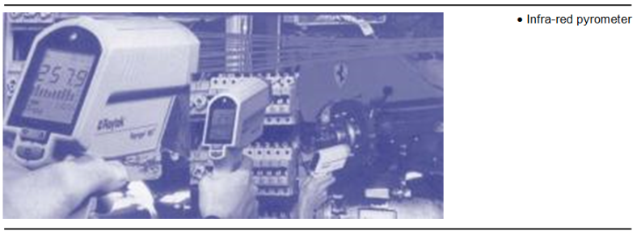
Fig. 11
Partout où le dysfonctionnement ou la défaillance d’une pièce s’accompagne d’un échauffement qui peut être détecté, cette technique est applicable. Les appareils de mesure des radiations IR émises par un équipement n’exigent aucun contact avec la pièce et peuvent mesurer les températures à des distances parfois très importantes selon les applications.
Ainsi sont détectées :
Domaine d'utilisation :
Les frottements, les surcharges électriques (distinguer les points chauds normaux de ceux anormaux), la dégradation des réfractaires, l’oxydation des contacts, les défauts d’étanchéité. On peut alors suivre une évolution des dégradations en stockant les données.
Analyse des vibrations et du bruitComme une machine ou une installation industrielle qui consomme de l’énergie n’est jamais parfaite, il y a toujours des pertes dissipées sous forme de chaleur, de bruit, de vibrations, etc. Elles correspondent aux pertes de rendement thermique, mécanique, électrique…
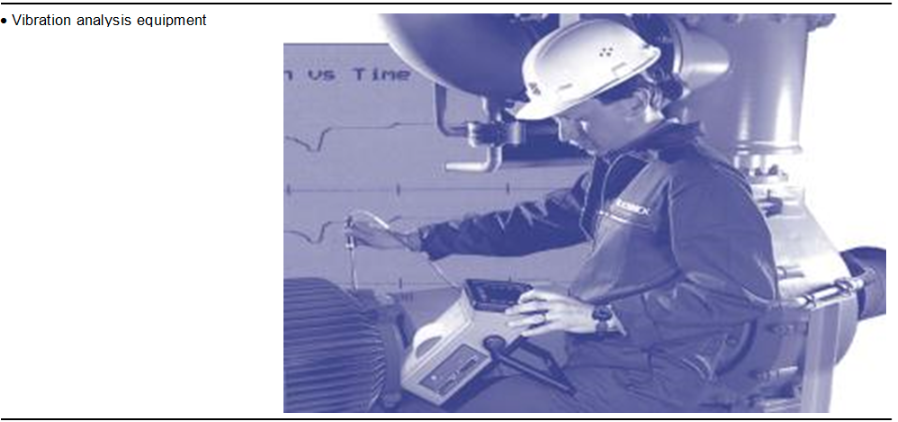
Fig. 12
Chaque machine possède une signature de vibration qui lui est propre et qui évolue dans le temps en fonction du déséquilibre ou de l’usure de certaines pièces comme les paliers. La courbe « signature » de vibration permet à l’occasion de diagnostiquer très précisément la nature du problème à partir du ratio entre la fréquence mesurée de la vibration parasite et la fréquence de rotation de la machine.
Cette analyse concerne :
Mouvements alternatifs :
Ces analyses sont généralement réalisées sur des échantillons prélevés sur la machine et envoyés à des laboratoires spécialisés
Domaine d’application Huile de transformateur Huile de turbine
Contrôle d'épaisseur par ultrasonsLes techniques de mesure d’épaisseur permettent des résultats rapides, sans pour autant avoir accès aux deux côtés de la pièce. La précision peut aller jusqu’à +/- 1 micron. La plupart des matériaux, comme les métaux, céramiques, composites, époxys, le verre, ou même des spécimens biologiques peuvent être soumis à ce contrôle.
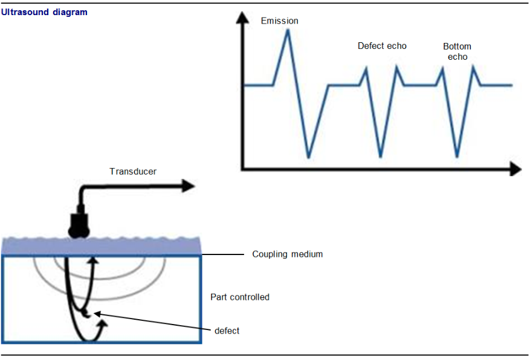
Fig. 13
PrincipesUne impulsion sonore courte à haute fréquence est générée grâce à un transducteur piézo-électrique. Il convertit un signal électrique en signal acoustique. Le signal sonore se propage alors dans la pièce à contrôler et se réfléchit sur les différents obstacles présents (défauts, faces de la pièce, changement de milieu…), ce qui crée des échos. Ceux-ci reviennent à la surface et sont captés par le transducteur. Sachant la vitesse de propagation de l’onde et le temps mis par l’écho, on peut donc en déduire la distance parcourue, d’où la profondeur du défaut. L’emploi d’un milieu couplant entre le transducteur et la pièce est nécessaire pour canaliser les ultrasons.
Alignement de machines avec des instruments faisant usage de rayons lasersUtilisé couramment pour l’alignement des turboalternateurs, l’usage de ces appareils permet aussi des gains importants lorsqu’ils sont utilisés pour l’alignement des machines de puissance inférieure. Un alignement plus précis permet de réduire la consommation d’énergie et augmente la durée de vie des pièces.
Les contrôles électriquesLe suivi de l’évolution (baisse) de la résistance électrique, entre les composants d’un moteur par exemple, permet de mieux déterminer le moment opportun pour réparer le bobinage ou tout simplement procéder au remplacement du moteur si le gain d’efficacité le justifie, compte tenu du temps de fonctionnement du moteur.
Les contrôles au liquide pénétrantCe test consiste à utiliser un liquide fourni en aérosol et qui a la propriété de s’infiltrer dans les micro-fissures du métal pour en révéler l’existence d’une façon beaucoup plus efficace que si l’exercice est réalisé à l’œil nu.
Au cours des dernières décennies, les technologies d’incinération des déchets dangereux ont connu plusieurs perfectionnements. Lors de la vie utile d’une usine, soit vingt à trente ans, il est intéressant d’évaluer si des modifications sont souhaitables pour améliorer l’efficacité du procédé, soit en termes de production d’énergie, soit en termes d’efficacité environnementale.
Lorsque les transformations sont rentables ou requises par l’évolution de la réglementation, l’usine doit être modernisée, ce qui pourra prolonger sa durée de vie utile.
De plus, comme chaque usine est généralement unique dans sa conception, les concepteurs ont rarement eu l’occasion de développer un modèle standard et de l’optimiser, comme le font les manufacturiers automobiles.
Les UIDD sont ainsi en constante amélioration, en vue de supprimer les éventuels défauts ou imperfections. Il appartient aux équipes d’exploitation et de maintenance d’y remédier et de trouver des modifications rentables pour les corriger. Si ce défi est relevé au cours des années la rentabilité globale de l’usine sera assurée.